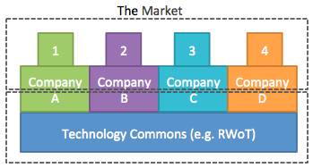

Towards a Sustainable Technology Commons
Revisiting economic models that support decentralized R&D in a commons based environment using Appreciative Inquiry
Heather Vescent (puissant@heathervescent.com, @heathervescent)
Topic Paper for Rebooting Web of Trust
Santa Barbara, March 2018
Version 1.2
In today’s interconnected world, technology is increasingly developed in common by competing businesses. This common technology is at the foundation layer, with companies utilizing, extending and customizing it as they develop their own product offerings for the market. Many corporate products are built upon the “raw material” of this kind of technology. These companies gain financial benefit when they sell the product, but there are few ways for that financial benefit to trickle down to the fundamental, technology commons level, without which, that product would not be available.
There are few economic models that support the development of technology commons, while addressing the capitalist use of that common technology. Open source technology is one model. A top-down model is for-profit companies join together to fund a non-profit to develop technology for use by by partner companies (e.g. SWIFT). A bottom-up model emerges from ad-hoc technology communities where bleeding edge and disruptive technology is explored as it is developed, mainly by technologists. Governments pursue their own R&D investment strategy that in effect, invest in technology commons with the end goal of encouraging diverse marketplace.
Rebooting Web of Trust (RWoT), along with other events, is one of these bottom-up, ad-hoc technology commons. Participants build relationships with each other as they work together on projects. Results include whitepapers, development of technical specifications, and working code as proof of concepts. The results are part of the technology commons of RWoT and they are valuable, usable, and actively influence technology specifications, product development, and vision.
The community has developed some typical problems that arise in commons, so why not use the common space to explore these problems we’ve created? This topic paper asks the community:
-
How can capitalist activities using common technology support the technology commons?
-
Can technology inherently enable an economic model that supports technology commons?
- What is the role of Government R&D in enabling and supporting technology commons?
Without resolving these problems, we invoke the tragedy of the commons, where the commons may collapse due to individuals gaining short-term benefit, without supporting the commons itself. When common’s collapse we lose a diversity of solutions, applications and mindshare, not to mention a delayed negative impact to the companies and individuals who no longer have the commons as a resource.
Problem: The Free Rider
It doesn’t feel good when a company comes to a technology commons, learns about ideas and technology and then to implement it for their own corporate benefit without returning anything to the technology commons. This is the biggest problem with commons – the free rider.
There should be a contribution to the commons from successful applications of technology/ideas that comes from the commons. This ensures a thriving technology commons that is not exploited to extinction by the most powerful players.
While not directly addressed, free riders are easily identified in the community. At RWoT, some companies have been identified as free riders while others have not acknowledged the commons itself in their corporate communications. At the last RWoT, I spoke to a number of people about this topic and heard these comments:
-
It's unacceptable to participate and not give back.
-
If the specs contribute to your business, you should contribute to the cost of convening.
-
Large companies are freeloading, sucking knowledge from the community.
-
We have multiple for profit companies. Some of them have done successful ICOs and have put nothing back into the community. They should.
-
If an organization does a significant raise and they don't put money back into the community we need to let them know that is not cool.
-
What's the social contract? We know what it is with open source software. What is the ethical social contract here?
One tricky situation is with individuals who participate as good standing members, however their company does not otherwise support the technology commons (other than paying for them to attend). What needs to change for these companies to further support the technology commons?
Problem: Attribution: Individual and to the Commons
As the technology developed in commons is more broadly adopted, clear attribution to both the individuals and the community itself is important to assert. There are recent examples of companies failing to mention the commons when presenting corporate innovations to the marketplace. This is taking credit for value that others have contributed through the commons.
Several technology commons projects discussed at RWoT are supported by government funding. Government agencies do not, cannot and should not receive any direct upsides to the success of the commons and as need to leverage the success in other ways to ensure that the commons thrive. Additionally, these Government R&D programs if not provided attribution and associated visibility to their higher ups (i.e. Congressional committees that determine Agency funding lines) result in a reduction of funding available in the future.
Individual attribution within the commons is more easily solved. One suggested model splits attribution three ways between:
-
Funders (“sponsors”) who put time and money into producing RWoT.
-
Participants who work on specs, whitepapers, code at the event.
-
Production team who shares the work with a wider audience (for influence and adoption).
Commons Models
We identify three examples of technology commons within a capitalist economy: Open Source, Corporate Non-Profit, Ad-hoc Technology R&D.
Open Source
The open source model has been used with much technology success, but more limited economic success. These often use licensing fees to pay back into developer costs. Additional companies often ask developers to contribute code, with the company paying for the developer’s salary. This shouldn’t be the norm, since there are situations where contributing developers are not employed by a company and are otherwise not compensated for their contributions.
Corporate Non-Profit
A top-down approach, this example is where a group of successful for-profit companies pool financial resources to solve common technology problems. SWIFT is an example of non-profit created by banks to build interoperable technology. However these non-profits may often starved of resources and limited in their ability to explore new technology solutions. They tend to be late adopters of new technology. Political goals of stakeholder companies may drive where resources are allocated.
Ad-hoc Technology R&D
Like-minded people start communities to explore new technology. These communities often start inside another community or due to the death of a community. The Internet Identity Workshop (IIW) and RWoT are two examples of community created technology commons. IIW in particular has spawned many specific associations for the general benefit of the broad digital identity space. The boundaries and technology ownership in these communities are often vague and there is less corporate control. Participants tend to be early adopters and exploring the bleeding edge of new technology. The participants may come from company technology divisions however they are not always empowered to return significant financial support.
Government R&D Investment
The U.S. government has a history of investing in new technology standards to support a diverse and competitive marketplace. One goal of these investments is to support the development of interoperable technology and technology standards, that otherwise would not be developed from the market.
Discussion Proposal for RWOT Santa Barbara
If this paper is selected for further discussion, we will use Appreciative Inquiry principles to explore these questions.
-
What aspects of the identified models work?
-
Are there other models we should consider?
-
Can we build economic models into the technology to ensure a thriving technology commons?
-
What aspects of this problem can technology solve? Which aspects can it not solve?
-
Is there a technological solution to the free rider problem?
-
Are the new governance models that can be enforced by the technology itself?
-
How does government funding support the development of Technology Commons? How can commons appropriate attribute government funding, especially when that funding is done through corporate entities?
Appreciative Inquiry Principles
-
The Constructivist Principle is the rule that we see the world as we are: our interior state, our mores, values and experiences create the lens in which we view the world.
-
The Poetic Principle says, what we focus on grows.
-
The Simultaneity Principle is the rule that when we ask the questions we have already begun to change. I like to think of this as change in-flight. Change doesn’t happen in a vacuum, or only in a certain segment of a process. Change is happening all the time, at any stage of the process. How is your participation changing you right now?
-
The Anticipatory Principle is the rule that what we believe, we conceive.
-
The Positive Principle is where we identify and leverage strengths. I like to remember the successes we have already experienced as part of history.